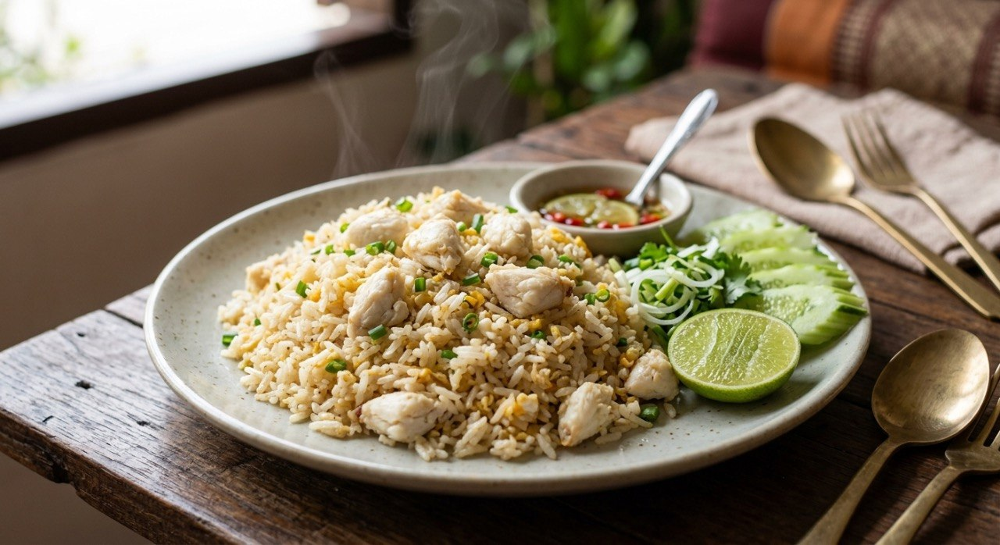

Loose grains with wok-hei, sweet lump crab, and a squeeze of lime — the fried rice Thailand orders to mark an occasion.

ข้าวผัดปู is not Tuesday night's leftover rice. Phol Food Mafia calls it exactly what it is: อาหารจานเดียวในโอกาสพิเศษ — the one-plate dish for a special occasion. The logic is simple: crab is expensive, so the dish carries weight. What makes it Thai is restraint — the seasoning stays pale, nothing dark, so the crab's sweetness leads.
Every source agrees on the foundations. The rice must be chilled overnight — Wongnai's tip page is blunt: hot fresh rice makes soggy, sticky fried rice, so use ข้าวเก่า (old rice) or cook fresh rice with less water. The wok must be steel and properly hot — Aroifin's version heats it until it smokes before the oil goes in. And the crab goes in gently, in stages, so it stays in pieces: TrueID's recipe splits the crab in two — half fried in for fragrance, half kept whole and folded in at the end.
The finishing touches separate the sources. TrueID drops a spoon of butter into the eggs for the restaurant smell. Phol adds an extra egg yolk for colour and richness. Everyone serves it with cucumber and lime — the lime squeeze, says Phol, is the signature finish that lifts the crab.
| Thai | English | Amount |
|---|---|---|
| ข้าวสวยแช่เย็น | Cooked jasmine rice, chilled overnight | 2 cups |
| เนื้อปู (ก้อน) | Lump crab meat | 1 cup |
| ไข่ไก่ (+ไข่แดง 1) | Eggs (+ 1 extra yolk) | 2 |
| กระเทียมสับ | Garlic, chopped | 1 tbsp |
| ต้นหอมซอย | Spring onion, sliced | 2 tbsp |
| เนยสด | Butter | 1 tbsp |
| ซีอิ๊วขาว / เกลือ / น้ำตาล | White soy / salt / sugar | 2 tsp / 1 tsp / ½ tsp |
| พริกไทยขาวป่น | White pepper | ½ tsp |
| น้ำมัน (ถั่วเหลืองหรือรำข้าว) | Vegetable or rice bran oil | for the wok |
| แตงกวา / มะนาว | Cucumber / lime | to serve |
Phol's measured version: 200 g rice, 80 g crab, 1 egg + 1 yolk, 25 g diced carrot, 1 tsp each white soy and seasoning sauce, ½ tsp sugar. Aroifin's restaurant ratio: 1 plate rice, 1 cup crab, 2 eggs, 1 tsp pepper, ½ tsp salt, 1 tsp sugar, 1 tsp seasoning sauce.
Butter or none. TrueID's butter-in-the-eggs is his restaurant-aroma trick — no other source uses butter. Wongnai and Aroifin go oil only. The butter version is richer and more golden.
Egg count and yolk. Aroifin and TrueID use 2 eggs; Wongnai and Phol use 1 — Phol adding an extra raw yolk for colour. The yolk version gets the deep-yellow grains that read as expensive.
Carrot or not. Wongnai and Phol add chopped carrot for colour; Aroifin and TrueID keep it crab-and-onion only. Cosmetic, not traditional — older recipes skip it.
Garlic or not. Wongnai and TrueID start with chopped garlic; Phol and Aroifin go straight to egg — the garlic adds a head start of fragrance, the no-garlic versions stay cleaner and let the crab lead.
Seasoning set. Wongnai salts the rice and warns against dark soy ("never use ซีอิ๊วดำ"); Phol and Aroifin use seasoning sauce + sugar; TrueID seasons "to taste" with soy. Nobody uses oyster sauce or curry powder — that's the pineapple version's business.
This recipe is translated from the following Thai-language sources. Where they disagree, we've said so.
1. Wongnai — "สูตร ข้าวผัดปู เมนูอาหารจานเดียว เนื้อปูเน้นๆ" (chilled-rice and no-dark-soy rules; the base used here) — wongnai.com
2. TrueID — "สูตรทำ ข้าวผัดปู หอมกลิ่นกระทะ พร้อมเคล็ดลับ ข้าวร่วน เนื้อปูไม่เละ" (butter trick, two-stage crab) — food.trueid.net
3. Aroifin — "วิธีทำ ข้าวผัดปู สูตรภัตตาคาร" (restaurant ratio) — aroifin.com
4. Phol Food Mafia — "Crab Fried Rice (ข้าวผัดปู)" (measured version with extra yolk) — pholfoodmafia.com